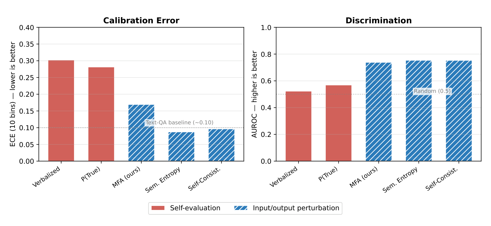
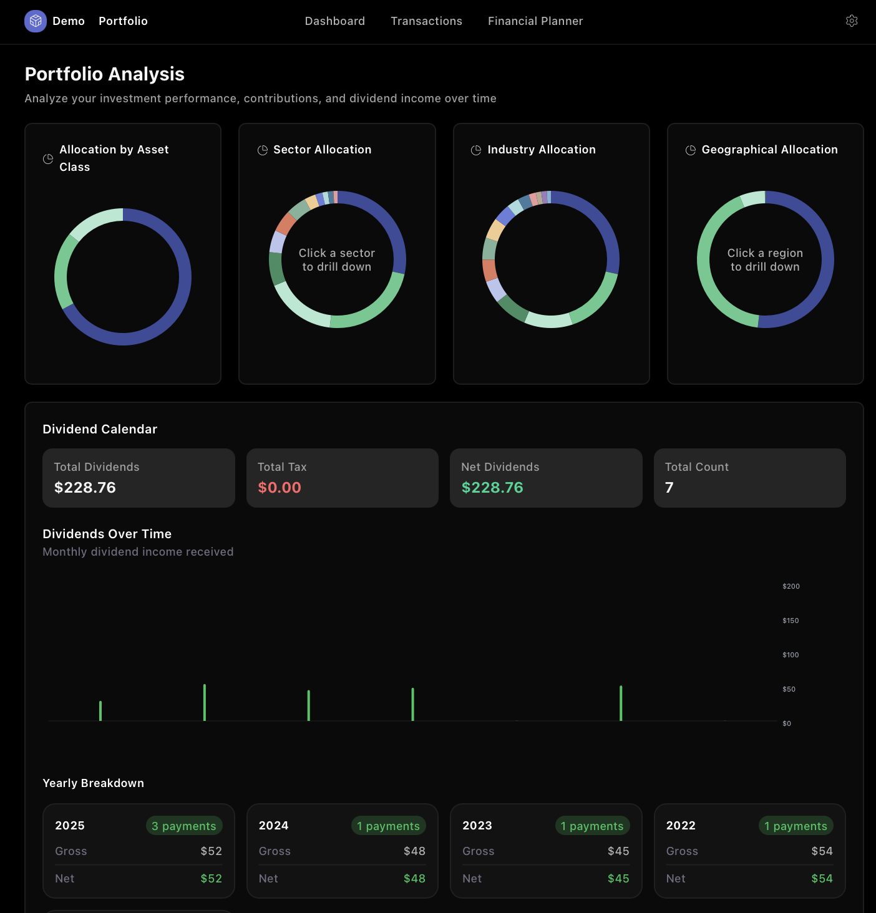

Projects
An overview of my past and ongoing research and projects, centered around quantum physics, statistical modeling, and applied machine learning.
All illustrations are my own unless otherwise noted. Publications are open access.
Research
2026Calibrated Confidence Estimation for Tabular Question Answering
Large language models are increasingly deployed for question answering over tables, yet whether their confidence reflects the actual likelihood of being correct on structured data was largely unstudied. This paper presents the first systematic calibration study for tabular QA, comparing five confidence estimation methods across five frontier LLMs (GPT-4o, GPT-4o-mini, Gemini 2.5 Flash, Llama-3.3-70B, DeepSeek-V3) on WikiTableQuestions and TableBench.
All models are severely overconfident (smooth ECE 0.35–0.64, versus 0.10–0.15 reported for textual QA). A consistent self-evaluation versus perturbation dichotomy replicates across both benchmarks: self-evaluation methods (verbalized confidence, P(True)) reach AUROC 0.42–0.76, while perturbation methods (semantic entropy, self-consistency, MFA) reach 0.78–0.86, with per-model paired bootstrap tests significant at p < 0.001 after Holm-Bonferroni correction.
I propose Multi-Format Agreement (MFA), which treats format sensitivity as an uncertainty signal: the same table is serialized losslessly as Markdown, HTML, JSON and CSV, and agreement across formats serves as confidence. MFA reduces ECE by 44–63%, matches sampling baselines at 20% lower API cost, and combines complementarily with sampling — an MFA + self-consistency ensemble lifts AUROC from 0.74 to 0.82. A secondary contribution, structure-aware recalibration, extends Platt scaling with table covariates and improves AUROC by +10 percentage points over standard post-hoc methods.

2024Multivariate Bicycle Codes
Quantum error correction suppresses noise in quantum systems to allow for high-precision computations. In this work, we introduce Multivariate Bicycle (MB) Quantum Low-Density Parity-Check (QLDPC) codes, via an extension of the framework developed by Bravyi et al. [Nature 627, 778–782 (2024)], with a particular focus on Trivariate Bicycle (TB) codes.
Unlike the weight-6 codes proposed in their study, we offer concrete examples of weight-4 and weight-5 TB-QLDPC codes which promise to be more amenable to near-term experimental setups. We show that our TB-QLDPC codes up to weight-6 have a bi-planar structure. Most of our new codes can also be arranged in a two-dimensional toric layout, and have substantially better encoding rates than comparable surface codes while offering similar error suppression capabilities.
For example, we can encode 4 logical qubits with distance 5 into 30 physical qubits with weight-5 check measurements, while a surface code with these parameters requires 100 physical qubits. The high encoding rate and compact layout make our codes highly suitable candidates for near-term hardware implementations.
![Tanner graph of the weight-5 [[30, 4, 5]] Trivariate Bicycle code](images/QECTannerGraph-1.png)
2024Context-Aware Gate Calibration with Deep Reinforcement Learning
Scalable quantum computation relies on executing quantum gates with high fidelity, which requires operations that are robust to a variety of noise sources. While many techniques exploiting physical models and experimental data have emerged, few consider the noise inherent to the execution of a specific quantum circuit context.
In this work, we benchmark the importance of such noise on near-term superconducting quantum devices and propose a new dynamical gate calibration method based on model-free reinforcement learning for its active suppression. We employ Proximal Policy Optimization (PPO), a policy-gradient method that improves stability during training.
We demonstrate the method's efficiency on a pulse optimization over a set of parameters that would be adjustable in real time, provided the control system supports real-time processing — so no additional memory overhead is required to enable adaptive, context-aware gate calibration. We envision the method as a new tool in calibration workflows, and as a step towards adjusting the building blocks of the gate model based on the context they are executed in.

2021Monte Carlo Simulations of NV Centres as Open Quantum Systems
Nitrogen Vacancy (NV) centres are a promising candidate for quantum information processing. We investigate the dynamics of an NV centre as an open quantum system using Monte Carlo simulations for a non-Markovian description, modelling the NV centre as a two-level system interacting with a bath of 13C nuclear spins in the carbon lattice.
Spins are modelled by stochastic differential equations (Markovian quantum jump approach), building on ideas from Breuer (2004). We show that a Markovian approach under a stochastic formulation of the von Neumann equation can recover the exact dynamics of a non-Markovian physical system such as the NV centre in the presence of a bath. Numerical simulation in Matlab.

Independent Projects
Side projects in quantitative finance, data analysis and automation.
2025fin-dash.xyz: Financial Dashboard for Retail Investors
fin-dash.xyz is an investment tracking platform for retail investors who want complete visibility into their portfolio. Track investments across stocks, ETFs and cryptocurrencies with support for multiple currencies and broker accounts, all in one place.
- Real-time portfolio analytics — net worth, P&L and returns with interactive equity curves and performance charts
- Performance metrics — Sharpe ratio, IRR, annualized volatility and drawdown analysis
- Dividend tracking — interactive calendar with tax deductions and yearly summaries
- Asset allocation — breakdown by sector, industry, region and country
- Contribution & return heatmaps — monthly patterns at a glance
- Portfolio optimization — efficient-frontier analysis with data-driven rebalancing recommendations
- Financial planning — compound growth simulator and objective planner for retirement goals
- Smart CSV import — intelligent column mapping and duplicate detection for any broker

2025Singapore Income Distribution Analysis
Analysis of publicly available data from the Inland Revenue Authority of Singapore (IRAS) on the assessable income of tax residents. Between 2004 and 2023, Singapore's income distribution experienced broad-based growth, as shown in the Growth Incidence Curve: for most percentiles incomes rise almost linearly — roughly +0.6% cumulative growth per percentile.
Several regime breaks emerge: percentiles P62–P67 and P70–P80 temporarily outpace the linear trend, while P86–P89 and especially P92–P98 fall below it. The top 1% (P99) stand out again with cumulative growth of around 66%, exceeding the fitted line — highlighting how inequality pressures concentrate at the very top despite broadly shared gains.

2024QRT Challenge: Explaining Electricity Prices in DE & FR
A quantitative research challenge by QRT to explain daily price variations of 24-hour electricity futures in France and Germany. At the time of submission my solution ranked in the top 9% of all global participants.
I built country-specific models: a LightGBM regressor for Germany and a regularized Elastic Net for France, with engineered features such as cross-border flow differentials, renewable production bundles and weather–demand interactions. Hyperparameters were optimized for Spearman rank correlation to capture directional moves in futures prices.
The permutation importance analysis for the German model (200 iterations) shows net exports, wind generation and FR–DE solar spreads as the most influential drivers. France required heavier regularization due to noisier patterns, reflecting structural differences between the two markets.

2023Automating Anki Flashcard Creation for Chinese
A Python tool that streamlines how Chinese learners create flashcards in Anki, the spaced-repetition flashcard app, by generating CSV files that Anki imports directly.
- Input: an Excel file (
hanzi_list.xlsx) with a “Hanzi” column listing the characters (simplified or traditional) - Output: an Excel file (
chinese_vocabulary.xlsx) with characters, pinyin, English translations and, where available, example sentences — exported to CSV for import into Anki
A second script semi-automates adding mp3 pronunciations inside Anki using the Forvo add-on, AutoHotkey-style: adjust the button coordinates to your screen and the script clicks through each card.

Coursework & Seminars
Selected work from courses and seminars at National Taiwan University and Ulm University.
2023Parallelized Deep Learning Training: A GPU Performance Study
Investigated the performance of parallelized deep learning training on an NVIDIA RTX 3070 GPU, comparing CPU and GPU training time of a convolutional neural network on MNIST, implemented in PyTorch with CUDA.
GPU training significantly reduced training time. I also explored the impact of batch size, learning rate, optimizer choice and data parallelization on training time and accuracy — parallelizing data loading across worker processes gave a significant additional speed-up. GPU access was provided by the National Applied Research Laboratories.

2022Network Theory: An Executive Summary
An overview of network theory introducing key concepts and phenomena such as power-law distributions, the Bianconi–Barabási model, “winner-takes-all” dynamics and the spread of information in random networks.